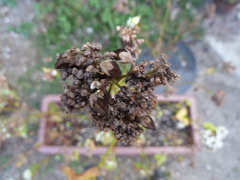
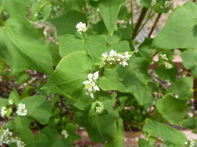
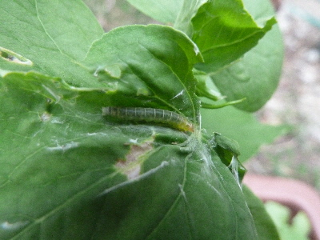
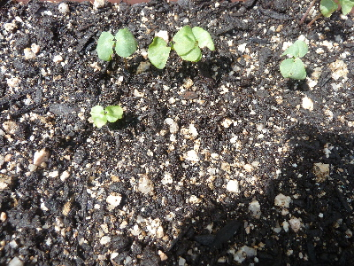
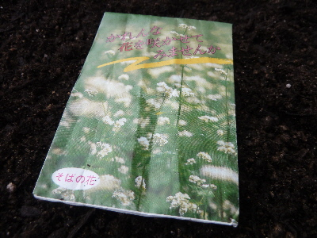

遊びで植物を育てよう
2017/10/01
蕎麦の実を収穫しました。
ちょびっとです。

それでも植えた種の倍はあるかな。
そば殻は手で簡単に剥けそうなので、殻を取ってふりかけにしようかな。
ふりかけだと無駄なく食べれていい気がする。
【蕎麦TOP】
【野菜TOP】
【園芸TOP】
2017/09/03
蕎麦の実はあまりできませんでした。
蕎麦の実ができました。

花の数のわりに、実が少ないです。
これくらい少ないと何にも利用できないかも。蕎麦茶も無理かも。
【蕎麦TOP】
【野菜TOP】
【園芸TOP】
2017/07/23
蕎麦の花って小さいな。
蕎麦畑で花は見たことあるんですが、こんなに小さかったかな？

もっと白い花が沢山あると思ったけど。
栄養が多く葉が育ち過ぎたのかな。
【蕎麦TOP】
【野菜TOP】
【園芸TOP】
2017/07/08
蕎麦にハマキムシがいました。
どこでも出没しますね。ハマキムシ。

増えないようちょくちょくチェックしないといけませんね。
【蕎麦TOP】
【野菜TOP】
【園芸TOP】
2017/06/25
蕎麦の発芽率が低かったです。
いい天気が続いたからかな。

プランタは隙間がいっぱいです。
今後まだ発芽するのがあればいいんですけど。
このまま寂しい状態だと、育てるのがちょっと嫌だな。
【蕎麦TOP】
【野菜TOP】
【園芸TOP】
2017/06/10
蕎麦の種を蒔きました。
お蕎麦の箱の中に種が入っていたので蒔きました。

プランターに花と野菜の土を入れて、その上にパラパラ蒔きました。
芽が出るのが楽しみです。
【蕎麦TOP】
【野菜TOP】
【園芸TOP】
蕎麦の栽培は難しい。
【おいしいものを食べよう。】【しっかり寝よう。】
【ソロ活をしよう!】【季節感のあることをしよう。】【動画視聴はほどほどに。】【当サイトの全てのコンテンツは無断転載禁止です。】